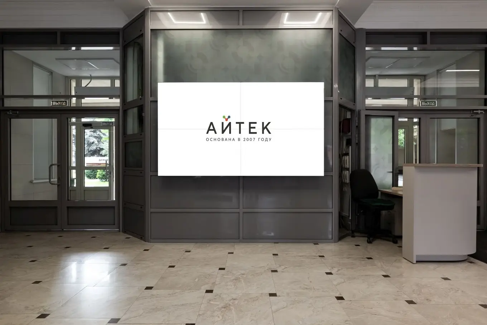

Видеостена 2x2
ЦКБ РЖД-Медицина
от 600 000 ₽ с НДС 22%Состав оборудования
Диагональ панели 55" · Диагональ видеостены 110" · Разрешение видеостены 1920x1080 · Яркость 500 кд/м2 · Толщина шва 3,5 мм · Размер видеостены 1368,4 мм х 2426,8 мм · Крепление в комплекте